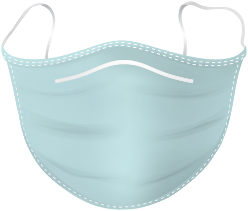
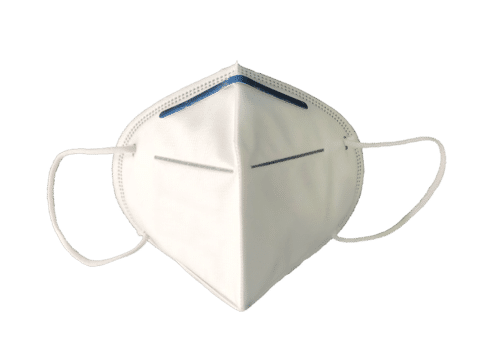

What is COVID-19 or novel coronavirus?
Coronaviruses are a group of related RNA viruses that cause diseases in mammals and birds. In humans and birds, they cause respiratory tract infections that can range from mild to lethal. Mild illnesses in humans include some cases of the common cold (which is also caused by other viruses, predominantly rhinoviruses), while more lethal varieties can cause SARS, MERS, and COVID-19. In cows and pigs they cause diarrhea, while in mice they cause hepatitis and encephalomyelitis. There are as yet no vaccines or antiviral drugs to prevent or treat human coronavirus infections.
Do's 
1. Do wear a cloth covering on your face at all times when you are not at home. A tighter fitting covering with rubber bands around your ears or ribbons/strings you can tie are best.
2. Do practice good hand hygiene and wash your hands frequently, especially before you eat, after you use the restroom, blow your nose or cough or before you touch your face.
3. Do cover your cough or sneeze. The best way to cough or sneeze is into your elbow and not your hands.
4. Move away from others who cough or sneeze.
5. Do buy a 4-week supply of food and household products and cleaning products in case we are in a situation where social isolation or quarantine is necessary.
6. Wipe down all surfaces you come into contact with. Any regular bleach-containing household products is likely to be effective.
7. Do wear a face mask and gloves if you are caring for a family someone who has tested positive for COVID-19.
8. Do be mindful of what you surfaces you are touching and how frequently you are touching your face.
9. Do remember that virus may live on surfaces like cash or credit cards. Wash your hands thoroughly after handling cash or credit cards before touching your face.
10. Do protect your immune system by getting your vaccinations, eating a balanced diet, avoiding too much alcohol, getting enough sleep and maintaining a healthy weight.
Dont's
1. Don’t just tie a scarf around your face as that can be loose fitting and need more adjustment. Use a cloth covering that is more tight-fitting.
2. Don’t panic – It is not a ‘panic-demic’ but don’t take this lightly either, especially if you are healthy! Emotional contagion is the spread of fear or panic and is more contagious than the virus itself.
3. Don’t touch your eyes, nose, mouth or face without washing your hands.
4. Don’t put your shoes on surfaces you may touch. We know that the coronavirus can sustain itself on surfaces, but don’t yet know how long.
5. Don’t treat “social distancing” like a “vacation”. This is not the time to run errands or go to the mountains. It is important to stay home and stay away from others for this to work.
6. Don’t share utensils or drinking glasses with others, including family members.
7. Don’t shake hands or give hugs as greetings. Use an alternative greeting that maintains 6-8 feet of distance.
8. Don’t go to public places like gyms, theaters, restaurants.
9. Don’t interact with your pets if you think you may have symptoms concerning for COVID-19, as pets can be a medium for spreading the virus further.
10. Don’t call for testing if you don’t have symptoms as testing is not recommended by doctors if you don’t have symptoms.
Some Immunity Boosting Tips
1. Take Proper 7-8 Hours of Sleep
Sleeping well is one of the easiest ways to increase immunity for COVID-19.
A human body naturally repairs and recovers, during sleep, from all the wear and tear.
2. Drink up to 8-10 glasses of water every day
Staying hydrated is the best way to increase immunity to fight Coronavirus because it flushes out
all the toxins from the body. Immunity booster drink such as fresh fruit juices and coconut water, along with
consuming enough water throughout the day helps in keeping the body hydrated.
3. Avoid Smoking and Alcohol
Smoking and other substance abuse weakens the respiratory system, while alcohol reduces the
immunity. This makes the body susceptible to catching the virus and being infected.
4. Include Neem Products in your hygiene
Since time immemorial, neem has been respected and widely used as an immunity booster.
It is very effective in keeping the body safe from attacks by harmful pathogens, thanks to its anti-viral,
anti-bacterial and anti-fungal properties.
5. Eat more whole plant foods
Whole plant foods like fruits, vegetables, nuts, seeds, and legumes are rich in nutrients and
antioxidants that may give you an upper hand against harmful pathogens.
Some Common Myths
Only old people are affected by coronavirus
Although the ratio of old people getting infected is a little higher,
it is because of their weak immune system and underlying co-morbidities. People with pre-existing diabetes mellitus, kidney disease
and heart conditions are also at a greater risk for the infection and mortality.
Young people also get infected, although mortality rates are on lower side.
Eating garlic will prevent the infection
Because of the antimicrobial properties of garlic, people
think it also prevents the COVID-19 infection. However, the WHO has already
cleared that there is no evidence whatsoever that it prevents the virus.
Onset of summers mean a decline of the virus
Although the previous coronaviruses—SARS and MERS—survived better in cold environments,
there is no guarantee that the same will be true for COVID-19.
From the evidence so far, the novel coronavirus can be transmitted in all areas,
including areas with hot and humid weather.
Eating meat can cause coronavirus
The virus doesn’t spread through consumption of meat—chicken, mutton, or fish, and avoiding it
doesn’t mean you will be safe. It can be spread when someone comes
in contact with respiratory droplets of an infected person.
Dogs can cause coronavirus
This myth started when a dog was tested positive in Hong Kong. But later it was found that
it was because the dog owner was infected with the virus,
and when tested, the virus was found in the dog’s canine. However,
WHO stepped in telling that coronavirus in dogs is not possible.
Surgical Masks 
A surgical It is designed to prevent infections in patients and treating personnel by catching bacteria
shed in liquid droplets and aerosols from the wearer's mouth and nose. They are not designed to protect
the wearer from breathing in airborne bacteria or viruses whose particles are smaller. With respect to some
infections like influenza they appear as effective as respirators, such as N95 or FFP masks; though the latter
provide better protection in laboratory experiments due to their material, shape and tight seal.
Surgical masks vary by quality and levels of protection. Despite their name, not all surgical masks are
appropriate to be used during surgery. Surgical masks may be labeled as surgical, isolation, dental, or medical
procedure masks. Chinese health officials distinguish between medical (non-surgical) and surgical masks.
N95 Masks 
An N95 mask or N95 respirator is a particulate-filtering facepiece respirator that meets the U.S. National
Institute for Occupational Safety and Health (NIOSH) N95 classification of air filtration,
meaning that it filters at least 95% of airborne particles. This standard does not require that the respirator be resistant to
oil; another standard, P95, adds that requirement. The N95 type is the most common particulate-filtering
facepiece respirator. It is an example of a mechanical filter respirator, which provides protection against
particulates but not against gases or vapors.
N95 respirators are considered functionally equivalent to certain respirators regulated under non-U.S.
jurisdictions, such as FFP2 respirators of the European Union and KN95 respirators of China. However, slightly
different criteria are used to certify their performance, such as the filter efficiency, test agent and flow rate,
and permissible pressure drop.